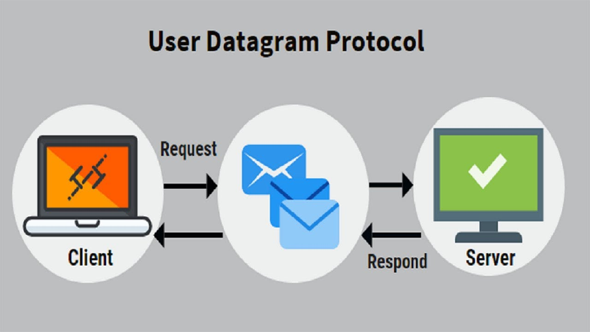

UDP
User Datagram Protocol
простой, ориентированный на дейтаграммы протокол без организации соединения, предоставляющий быстрое, но необязательно надежное транспортное обслуживание. Он поддерживает взаимодействия "один со многими" и поэтому часто применяется для широковещательной и групповой передачи дейтаграмм.
Internet Protocol (IP) является основным протоколом Интернета. Transmission Control Protocol (TCP) и UDP — это протоколы транспортного уровня, построенные поверх лежащего в основе протокола.
TCP/IP — это набор протоколов, называемый также "пакетом протоколов Интернета" (Internet Protocol Suite), состоящий из четырех уровней. Запомните, что TCP/IP не просто один протокол, а семейство или набор протоколов, который состоит из других низкоуровневых протоколов, таких, как IP, TCP и UDP. UDP располагается на транспортном уровне поверх IP (протокола сетевого уровня). Транспортный уровень обеспечивает взаимодействие между сетями через шлюзы. В нем используются IP-адреса для отправки пакетов данных через Интернет или другую сеть с помощью разнообразных драйверов устройств.

Пакеты
В передаче данных пакетом называется последовательность двоичных цифр, представляющих данные и управляющие сигналы, которые передаются и коммутируются через хост. Внутри пакета эта информация расположена в соответствии со специальным форматом.
Дейтаграммы
Дейтаграмма — это отдельный, независимый пакет данных, несущий информацию, достаточную для передачи от источника до пункта назначения, поэтому никакого дополнительного обмена между источником, адресатом и транспортной сетью не требуется.
MTU (Maximum Transmission Unit)
MTU характеризует канальный уровень и соответствует максимальному числу байтов, которое можно передать в одном пакете. Другими словами MTU — это самый большой пакет, который может переносить данная сетевая среда. Например, Ethernet имеет фиксированный MTU, равный 1500 байтам. В UDP, если размер дейтаграммы больше MTU, протокол IP выполняет фрагментацию, разбивая дейтаграмму на более мелкие части (фрагменты) так, чтобы каждый фрагмент был меньше MTU.
Порты
Чтобы поставить в соответствие входящим данным конкретный процесс, выполняемый в компьютере, UDP использует порты. UDP направляет пакет в соответствующее место, используя номер порта, указанный в UDP-заголовке дейтаграммы. Порты представлены 16-битными номерами и, следовательно, принимает значения в диапазоне от 0 до 65 535. Порты, которые также называют конечными точками логических соединений, разделены на три категории:
- Хорошо известные порты - от 0 до 1023
- Регистрируемые порты — от 1024 до 49151
- Динамические / частные порты — от 49152 до 65535
Недостатки
- Отсутствие сигналов квитирования.
- Использование сессий.
- Надежность.
- Безопасность.
- Управление потоком.
Преимущества
- Нет установки соединения.
- Скорость.
- Топологическое разнообразие.
- Накладные расходы.
- Размер заголовка.